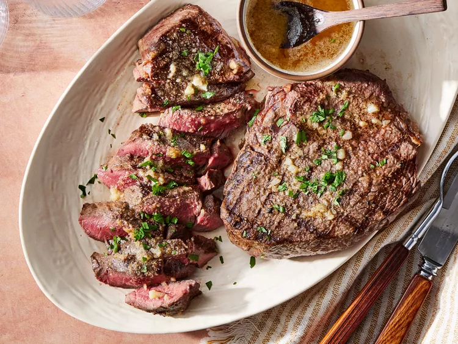

Prepare for the tastiest steak of your life

In need of bulking up for hot boy summer?! Time to crank that protein!
Ingredients for this godsend of a steak:
- ½ cup butter
- 4 cloves garlic, minced
- 2 teaspoons garlic powder
- 4 pounds beef top sirloin steaks
- salt and pepper to taste
Steps to make your dreams come true:
- Gather all ingredients. Preheat an outdoor grill for high heat and lightly oil the grate.
- Melt butter in a small saucepan over medium-low heat.
- Stir in minced garlic and garlic powder. Set aside.
- Season both sides of each steak with salt and pepper.
- Place steaks on preheated grill and cook 4 to 5 minutes per side. An instant-read thermometer inserted into the center should read 140 degrees F (60 degrees C) for medium doneness.
- Transfer steaks to warmed plates; brush the tops liberally with garlic butter and allow to rest for 2 to 3 minutes before serving.